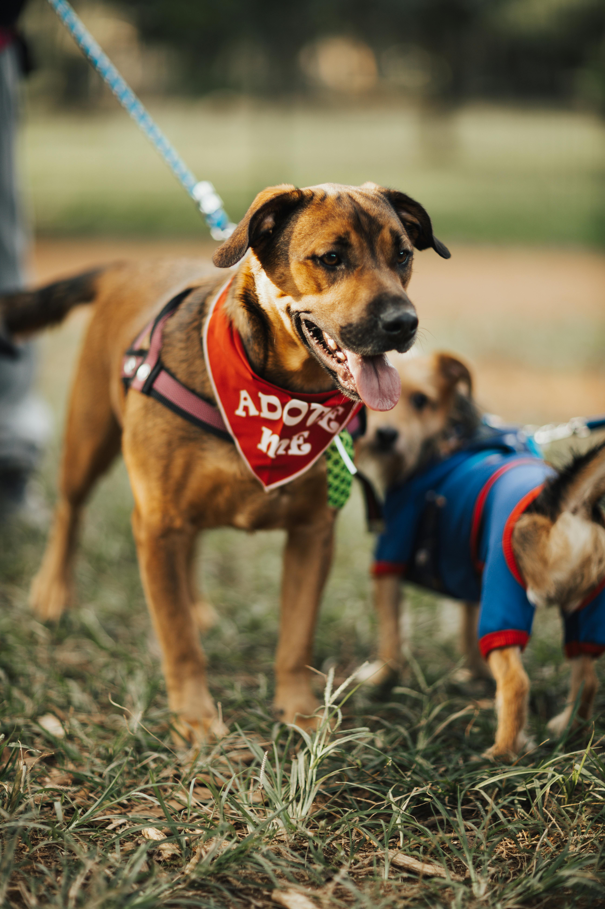
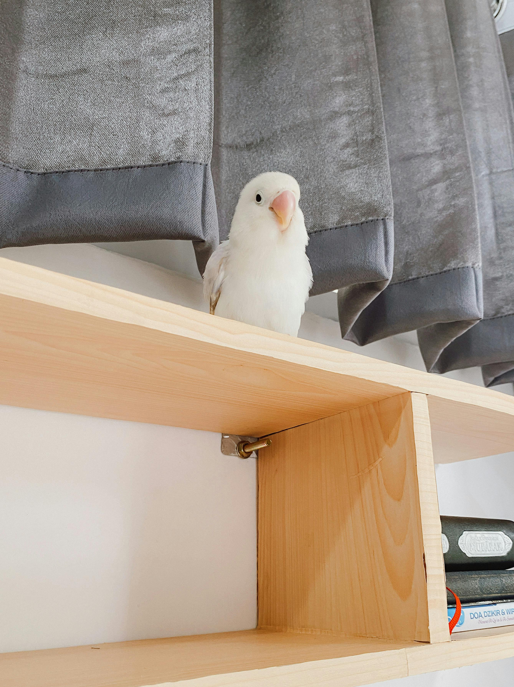

Pet Lovers
Adoption Home
Helping pets to find the best human in you
Since 2019
Information
- Open to visitor Friday to Monday from 1:00 to 4:00 PM, even during bank holidays. For other time, you have to make appointment. Please check our Instagram for warnings about special days.
- All are pet are very well care, they are proper veterinary care, vaccinate and regular exercise to ensure they heal
- Staff consulting will help will explain and help with all the steps for adoption process.
- They will explain about the adoption home, what you should understand before adopt a pet
- Make a previous interview
- Help you and the pet find the best harmonious match
- Promote meeting before adopting process
- Happy end: help you finalize the process for adoption.
Adoption history

Bob was left in abandoned house for several weeks when he was only a puppy, until one of the neighbours discovery him and inform us.
We brought him to the house, recovery fim from innutrition, gave a lot of love.
After two years he was fully recovery and adopted by a lovely boy and his family.

Tita was recovery from police operation against animal traffic. She was found in dark box very injured.
The police department brought her to recovery, after 600 day she was fully recovery, could fly and sing as whe wish.
It was too dangerous for her to sand back to normal habitat. But we could find a lovely home for Tita.
Friends of Pet Lovers
Would you like to be a volunteer in the Pet Lovers?
Please enter in contact with our volunteer department.
Or
Would you like to support our project?
Please enter in contact with our support department.
Contacs
| Department | Contacts |
|---|---|
| Adoption | 83 205 5656 |
| Volunteer | 83 205 5657 |
| Support | 83 205 5658 |